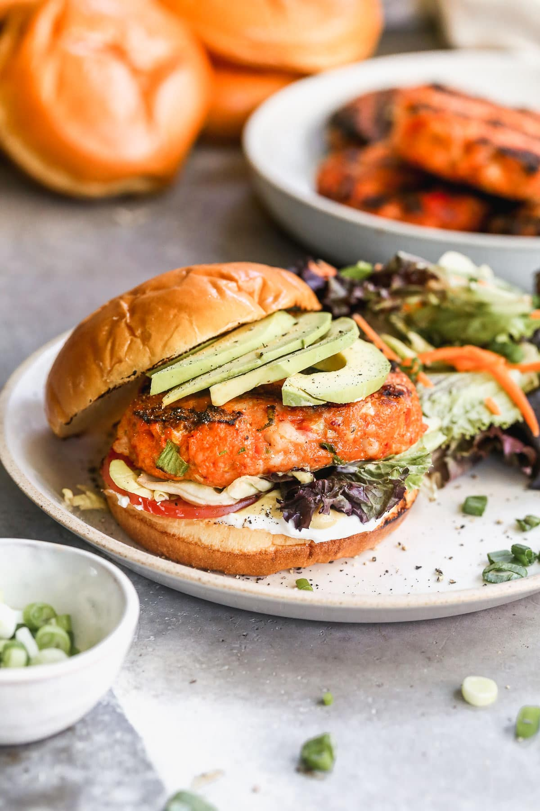

Seafood Burger Recipes

Let’s get together and have a sassy Shrimp Burger! Crisp outside, tender inside, and lightly spiced, these healthy seafood burgers hold together on the grill and bring welcome variety to your typical cookout menu.
Ingredients
- Shrimp. Shrimp’s structure and texture make it ideal for creating seafood burgers that hold together on the grill.
- Dijon Mustard. To wake up the shrimp and give the burgers some zip. I use ALDI’s own brand, Burman’s. (Dijon is also the flavor punch in another seafood favorite, Crab Salad.
- Green Onions + Parsley. For a touch of freshness.
- Bell Pepper. A colorful red bell pepper complements the seasonings and sneaks in veggies too.
- Southern-Inspired Spices. Paprika, seafood seasoning, and a pinch of cayenne give a nod to the classic shrimp po’boy.
Instruction
- Preheat the grill to medium. Add 2/3 of the shrimp to a food processor.
- Add the garlic and seasonings. Pulse a few times.
- Stir in the remaining bell pepper, green onion, and shrimp.
- Shape 6 patties. Refrigerate for 15 minutes
- Grill for 4-5 minutes. Flip and grill for another 3-4 minutes.